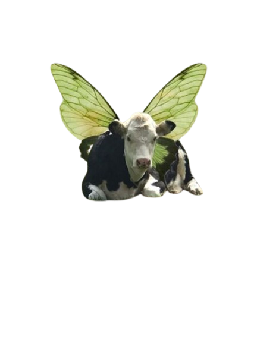
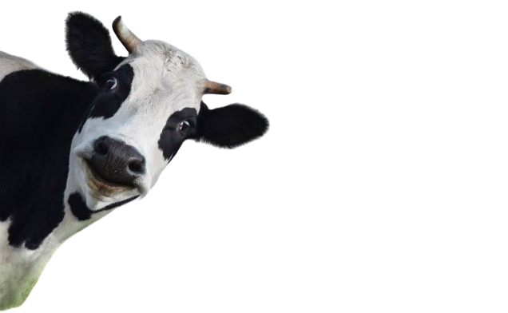

Why Cows Are Like Iman


Cows are calm, nurturing, and bring peace—just like you 🌸🐄
Cows are gentle and social animals known for their calm demeanor and strong herd instincts. They often symbolize harmony with nature and a nurturing spirit.
Iman, you share their peaceful energy—always kind, caring, and bringing comfort to those around you. Like cows in a meadow, your presence makes everything feel grounded and serene.